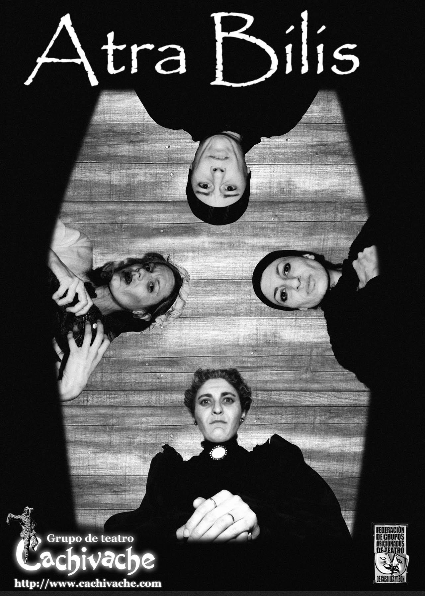
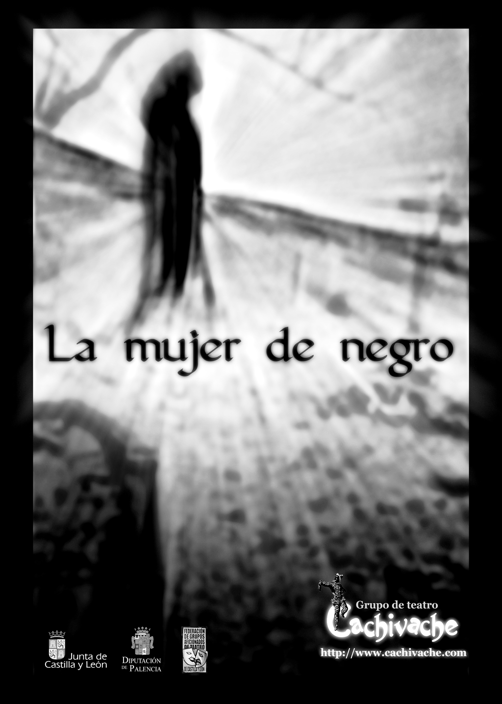
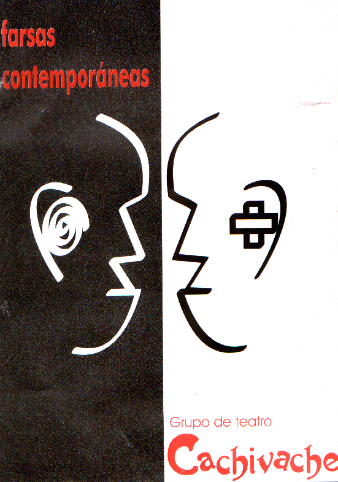
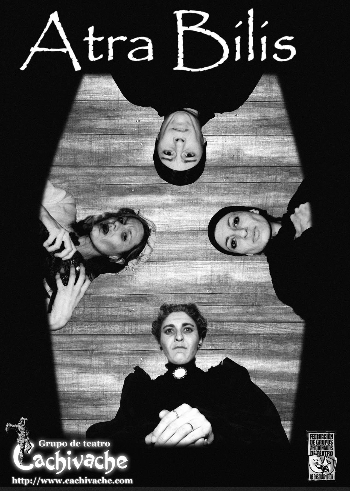
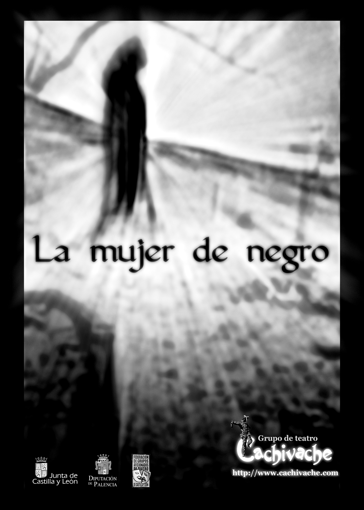
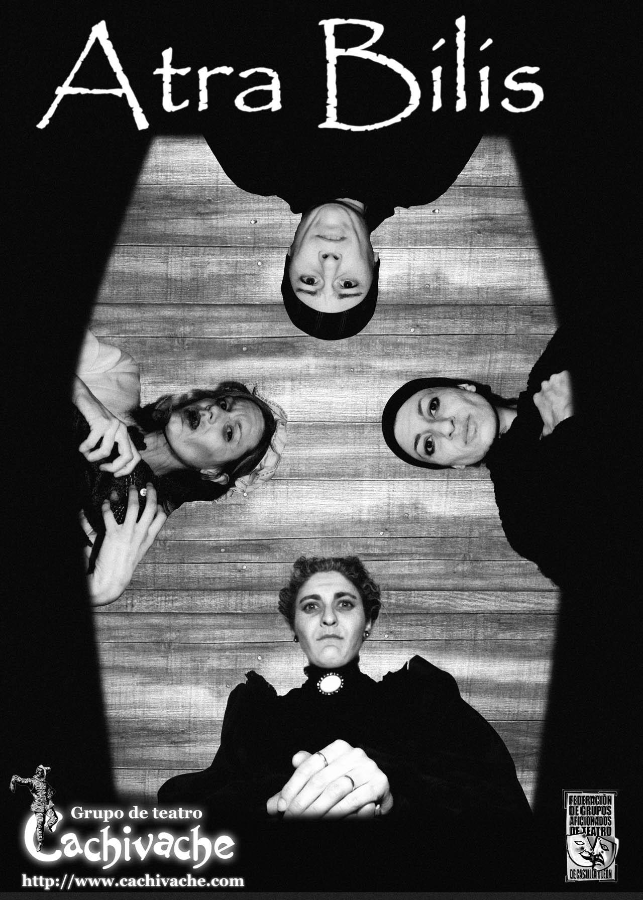
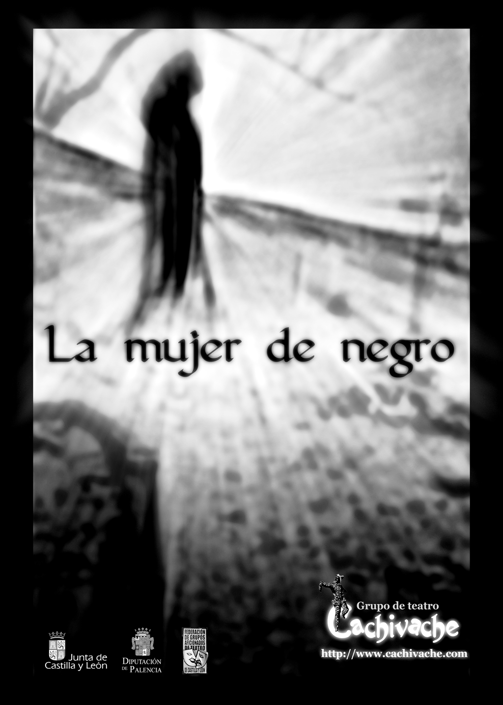
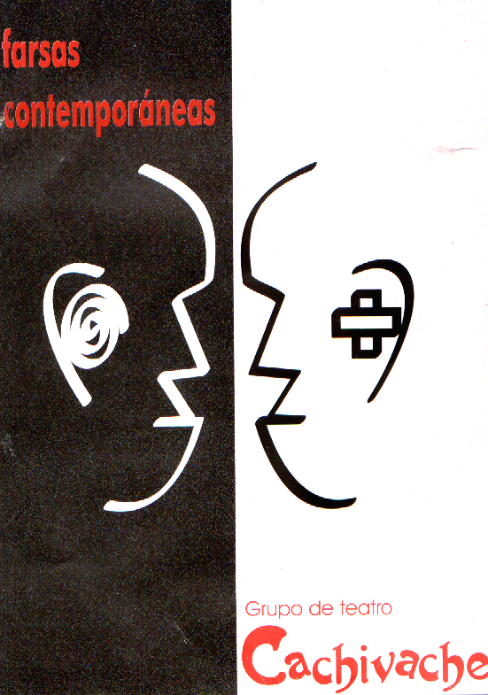
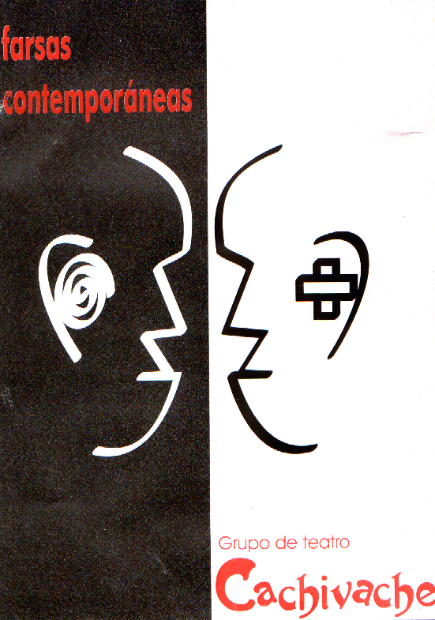

Home
Obras
Proximas actuaciones
Premios
Calabazanos

Atra Bilis

La mujer de negro
Un corazón lleno de lluvia

Farsas Contemporáneas
Soliloquío de grillos
 CalabazanosAtra BilisLa mujer de negro
CalabazanosAtra BilisLa mujer de negro Un corazón lleno de lluviaFarsas Contemporáneas
Un corazón lleno de lluviaFarsas Contemporáneas Soliloquío de grillos
Soliloquío de grillos